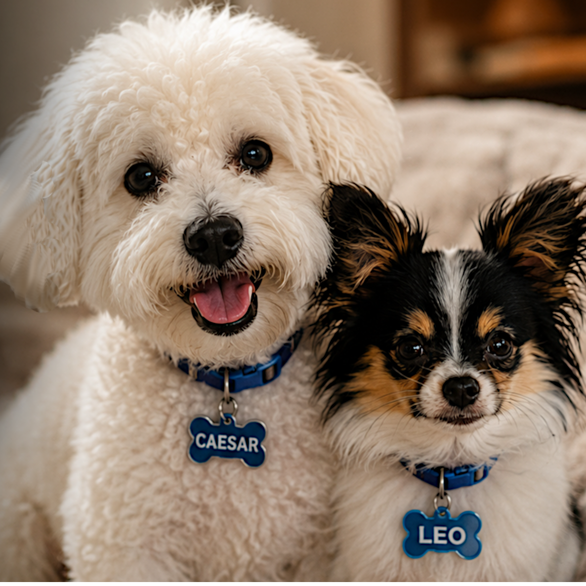

One-time donation
Help meet immediate foster-care, supply, transportation, or veterinary needs.
< Donate SecurelyYour support helps dogs stay safe while their people work toward stability.
Give with purpose
Donations help Second Leash provide food, veterinary care, prevention medicine, crates, bedding, cleaning supplies, transportation, and reunification support for dogs in temporary foster care.
Second Leash is a 501(c)(3) tax-exempt nonprofit organization. EIN: 33-3031631. Donations may be tax-deductible to the extent allowed by law.

>Help meet immediate foster-care, supply, transportation, or veterinary needs.
< Donate SecurelyProvide reliable support that helps us plan for dogs entering care.
Donate SecurelySupport the documented care needs of a dog or bonded pair currently in our program.
Donate SecurelyProvide food, crates, bedding, cleaning supplies, enrichment items, and other approved necessities.
Donate SecurelyFor privacy and safety, request the official mailing address by email rather than using a residential address posted online.
Request Mailing InstructionsBusinesses can donate products, services, gift cards, transportation, veterinary support, or fundraising items.
Contact UsUnless a donation is accepted with a specific written restriction, Second Leash may use funds where they are most needed to advance its charitable mission. Restricted gifts are used for the stated purpose when accepted; excess or unusable restricted funds will be handled according to applicable law and donor communications.